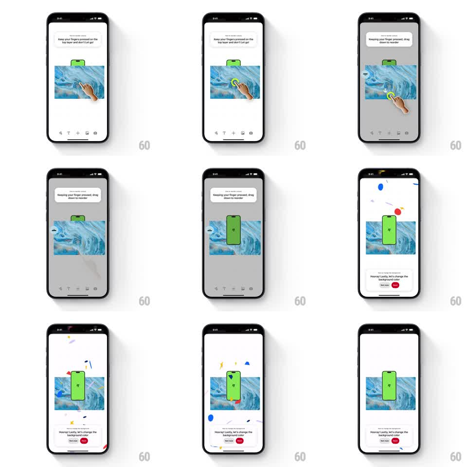

Media
Frame-by-frame

Rebuild this interaction 1:1: Pinterest's layer-reorder tutorial - tooltips coach "Keep your fingers pressed on the top layer and don't let go!" then "Keeping your finger pressed, drag down to reorder", a hand drags the image downward to reorder, and a confetti burst plus a bottom card celebrate completion.

Rebuild this interaction 1:1: Pinterest's layer-reorder tutorial - tooltips coach "Keep your fingers pressed on the top layer and don't let go!" then "Keeping your finger pressed, drag down to reorder", a hand drags the image downward to reorder, and a confetti burst plus a bottom card celebrate completion.
## Integration
Integration: stack-agnostic spec - springs given as stiffness/damping, timed motions as duration + curve; map every value to your framework and animation library of choice.
## Scene
Collage editor: blue-marble image with a green phone cutout, green tooltip bubble top, illustrated hand with yellow touch ring, toolbar at bottom. Reorder state: canvas dims, image lifts. Completion: confetti burst, then a white bottom card "Hooray! Lastly, let's change the background color" with "Not now" and a red primary button.
## Motion spec
Pattern: coached hold-and-drag reorder + celebration.
- Tooltip 1 shows; hand presses the image: yellow ring pulses, image lifts (scale 1.04, shadow deepens, ~250ms).
- Tooltip swaps to "Keeping your finger pressed, drag down to reorder" (crossfade 200ms); background dims (~30%) so the held layer pops.
- Hand drags the image down ~120px over ~600ms (ease-in-out); the layer follows 1:1 with slight tilt (~3deg).
- Release: image drops into its new z-order with a soft bounce (spring ~350/22, ~300ms), dim lifts.
- Confetti: ~40 pieces from the top, gravity + rotation + drift, ~1.2s fall; simultaneously the completion card slides up (spring ~300/26, ~300ms).
## Calibration
- The drag is the lesson: image follows the finger exactly, tilt subtle.
- Confetti and the card fire together, immediately on successful drop.
## Reduced motion
Drag without tilt; confetti becomes a check pulse.
## Don't miss
- The dim only exists while dragging - it frames the held layer.
- Completion card has both a dismissive ("Not now") and primary action.